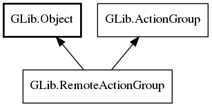

GLib.RemoteActionGroup Reference Manual
Packages
gio-2.0
GLib
RemoteActionGroup
activate_action_full
change_action_state_full
RemoteActionGroup
Object Hierarchy:

Description:
public
interface
RemoteActionGroup
:
Object
,
ActionGroup
All known implementing classes:
DBusActionGroup
Namespace:
GLib
Package:
gio-2.0
Content:
Methods:
public
abstract
void
activate_action_full
(
string
action_name,
Variant
? parameter,
Variant
platform_data)
public
abstract
void
change_action_state_full
(
string
action_name,
Variant
value,
Variant
platform_data)